Navigation
Users had difficulty navigating the app's different features, and many described the interface as cluttered.
Redesigning healthcare appointment discovery and booking around how people actually choose, compare and confirm care.
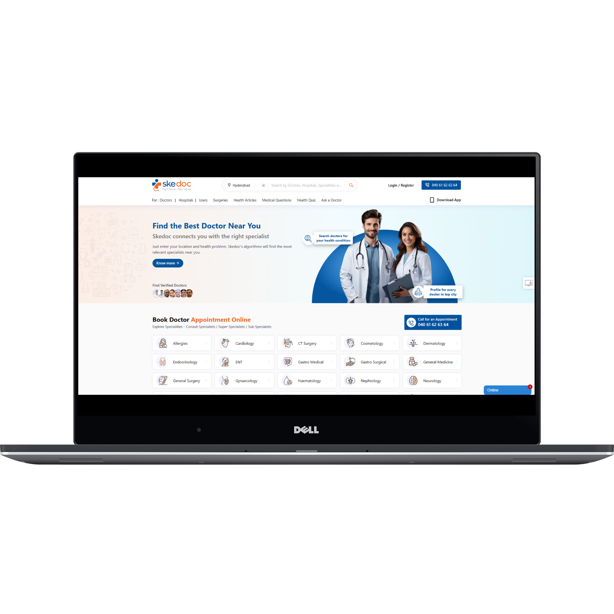
Skedoc was redesigned to address friction around finding doctors, navigating the product, booking appointments and discovering telemedicine.
The design challenge was not simply to make the interface cleaner. It was to create a clearer path from need → specialist → availability → confirmation.
The existing experience combined many healthcare tasks in a product where users still needed to make confident decisions quickly.
Users had difficulty navigating the app's different features, and many described the interface as cluttered.
Search needed stronger filtering around specialty, location and availability.
The appointment path could feel complicated and required clearer guidance.
Virtual consultation was not sufficiently visible or easy to discover.
The original research documented 10 qualitative interviews with a mix of frequent healthcare-app users and people new to telemedicine.
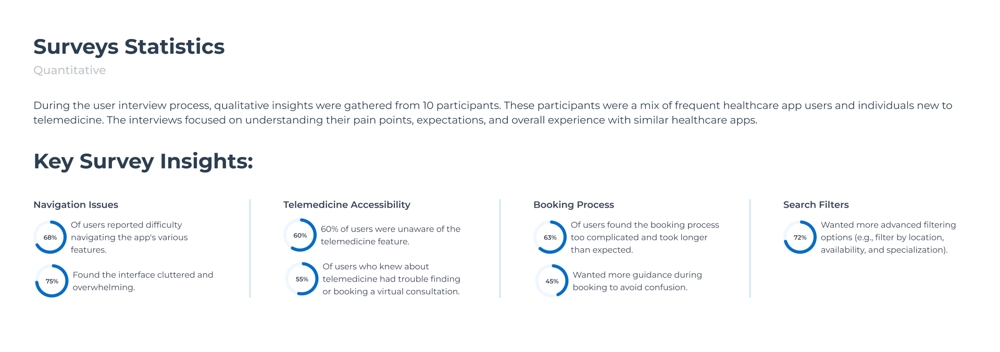
Users reported difficulty navigating the app's features.
Users found the interface cluttered and overwhelming.
Users were unaware of the telemedicine feature.
Users found booking too complicated or slower than expected.
Users wanted more advanced filtering options.
Users wanted more guidance during booking to avoid confusion.
The case study's original research used personas, empathy mapping and card sorting to understand how users organize healthcare tasks and services.
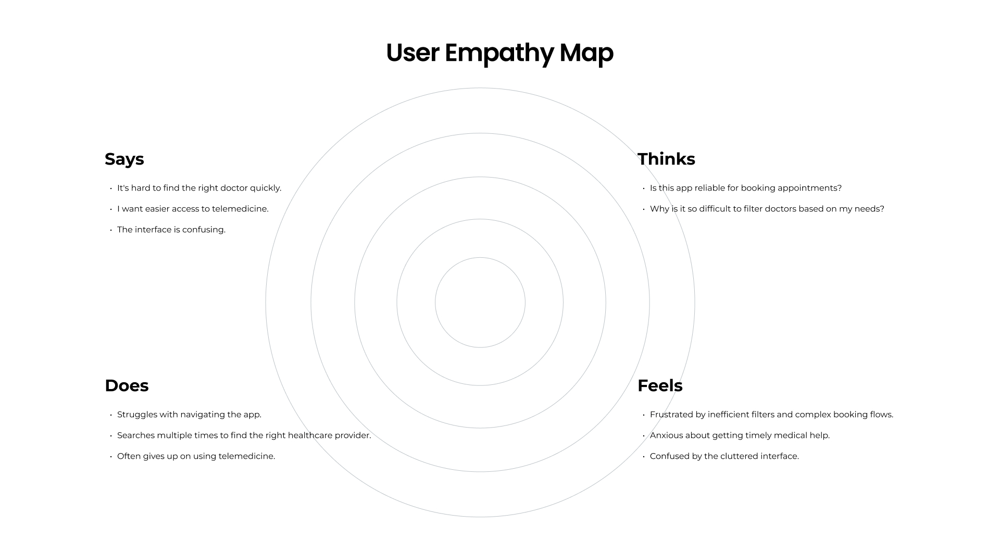
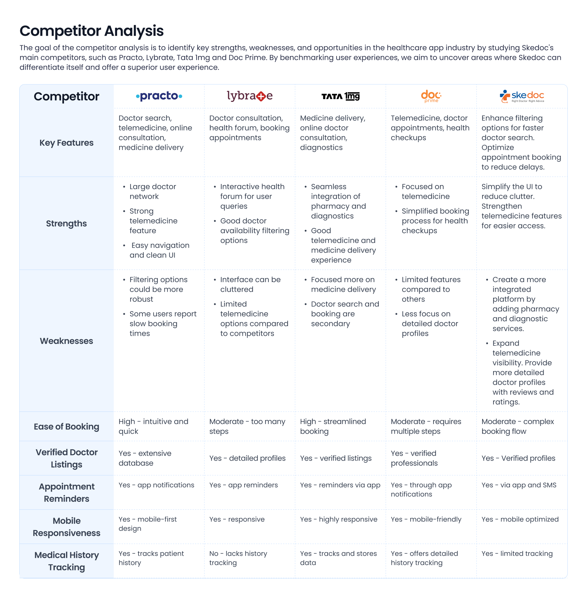
The resulting architecture groups healthcare tasks around discovery, appointments, health information, payments and support rather than exposing every capability at once.
The core flow consolidates multiple entry points into a clearer sequence while preserving alternative paths where users may enter through specialty, doctor or appointment context.
Search or browse by healthcare need.
Review doctor, specialty and relevant details.
Choose a suitable date and time.
Confirm appointment details before committing.
Provide a clear completion state.
Authentic Skedoc screens show the experience moving from discovery through specialist selection, scheduling and confirmation.
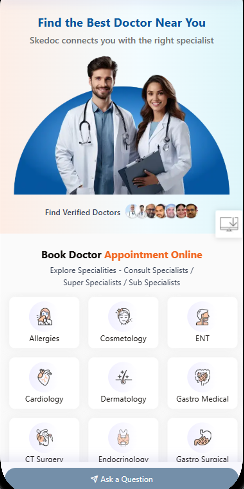
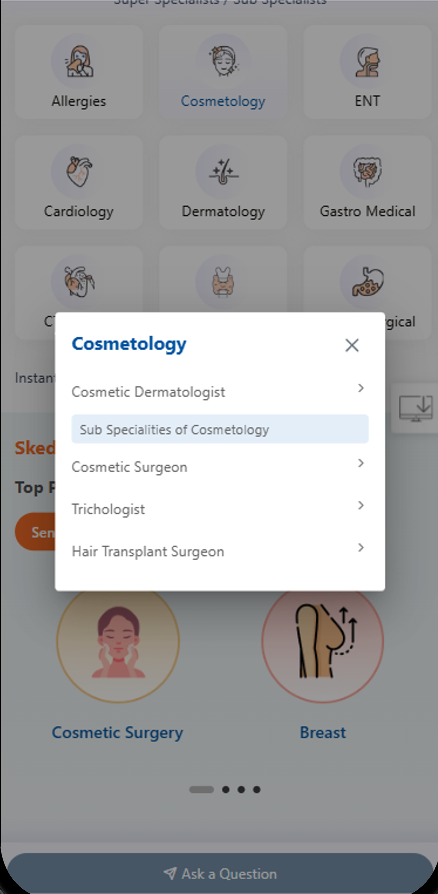
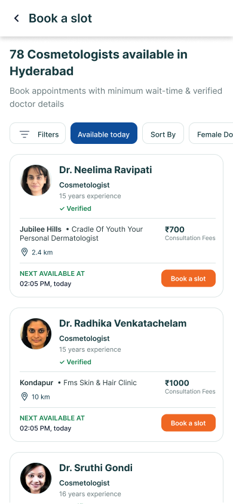
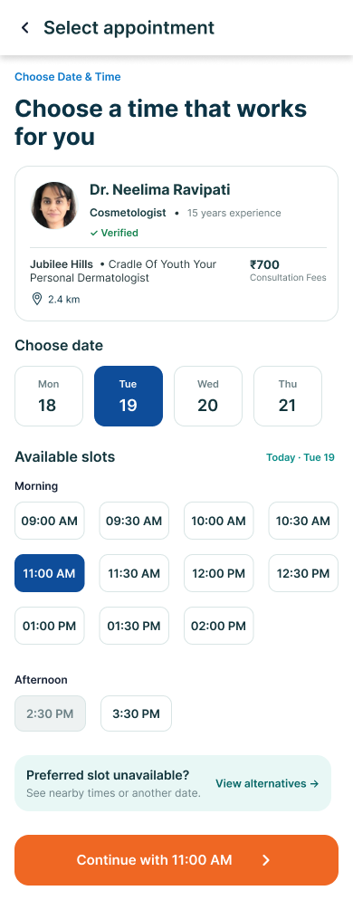
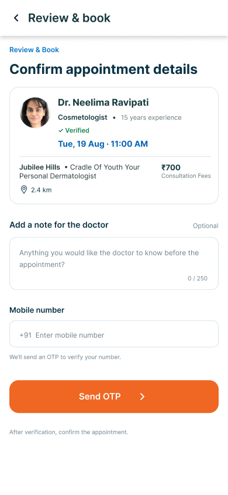
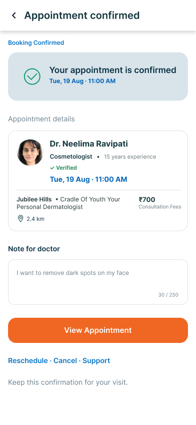
The supplied product screens include a slot-conflict state, which is important in a real appointment product: availability can change and the interface needs a clear recovery path.
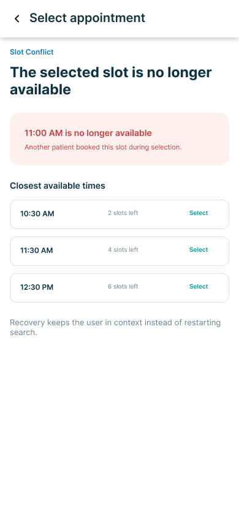
The product must explain what happened, preserve as much user context as possible, and provide a next action instead of leaving the user at a dead end.
The original project included a design-system and visual-strategy phase. The system creates reusable foundations for typography, color, components and interaction patterns.
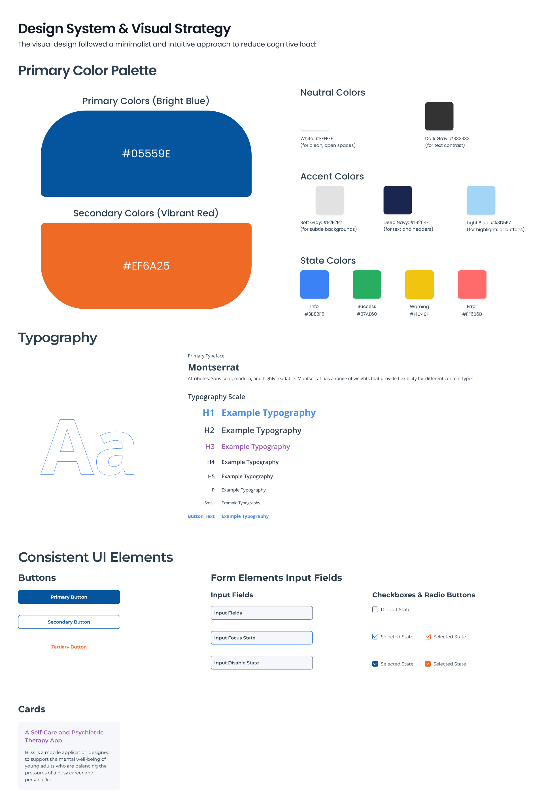
Establish hierarchy and healthcare-oriented visual trust.
Reuse patterns across doctors, services and appointments.
Make appointment and system states understandable.
Carry the same interaction language through booking and management.
The supplied case-study material explicitly addresses usability and accessibility. The design focus is on clear hierarchy, readable content, predictable actions and understandable states.
The redesign addressed the documented friction around navigation, doctor search, booking and telemedicine visibility by restructuring the experience around the user's decision journey.
Skedoc required balancing healthcare complexity with the user's need for confidence and clarity. The strongest design decisions came from connecting research findings to information architecture, task flows, interface hierarchy and the moments where users commit to care.